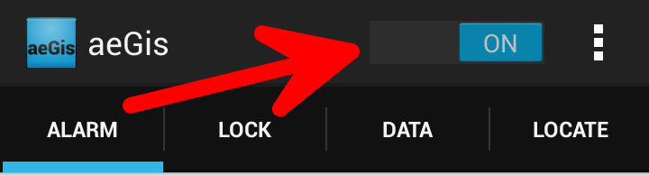
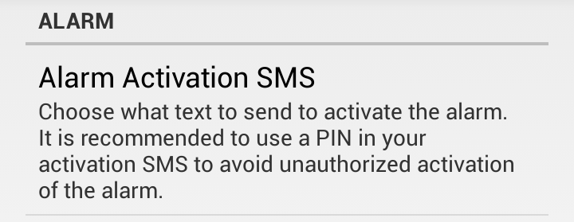
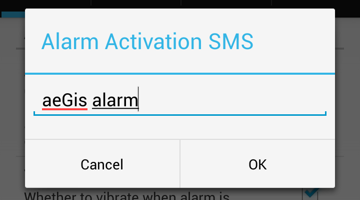
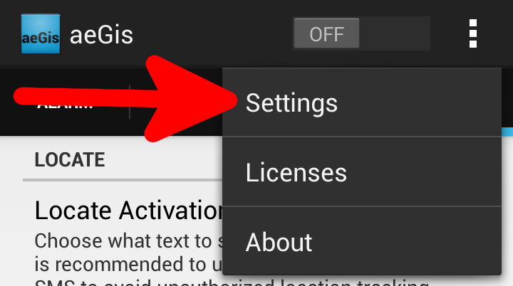
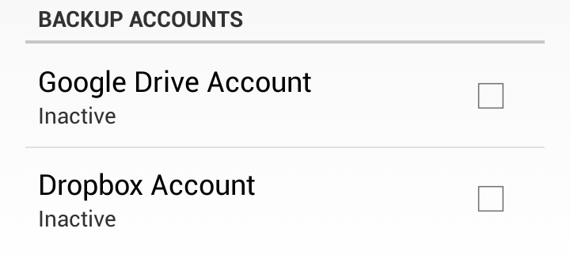
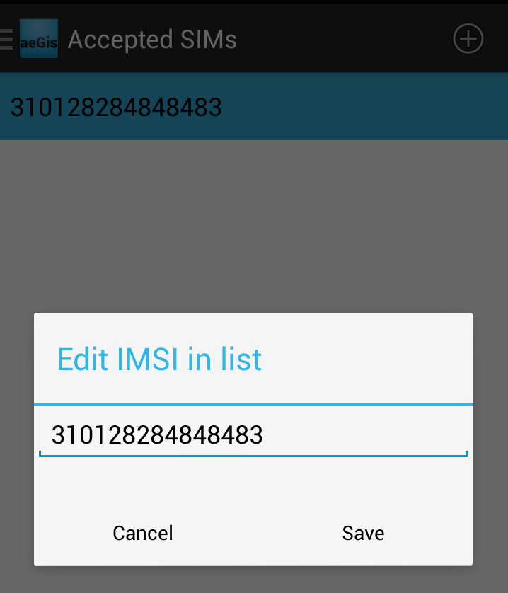

Welcome to aeGis!
Please reference this item when you have questions regarding the app.
To enable a feature, like the alarm triggering on incoming text message, enable the toggle for the feature by setting it to the "ON" position.
(NOTE: Some features may request added permissions or configurations to be used properly.)

To trigger a feature, like the alarm on incoming text message. You need to first set the Activation SMS that will trigger it.
First click on the item that shows "Activation SMS" for the given feature. Which in this example is "Alarm Activation SMS".


When this Activation SMS is sent to the device, as long as the feature is enabled, the feature will trigger.
- To Setup Backup Accounts:
To setup backup accounts, first click on the item in the action bar that brings up the overflow menu. From there click on "settings".

To add or modify an account, click on the account type under the section "Backup Accounts".

When you authorize a backup account, aeGis will create a folder in the backup service titled "aeGis Backup" where the options from the "DATA" tab will be stored when they are triggered.
- To Set Up Accepted SIM Whitelist:
